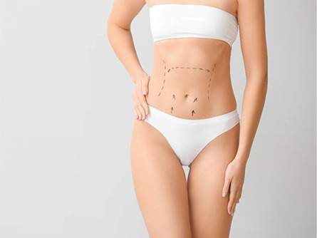
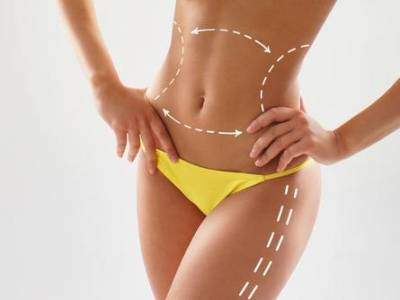
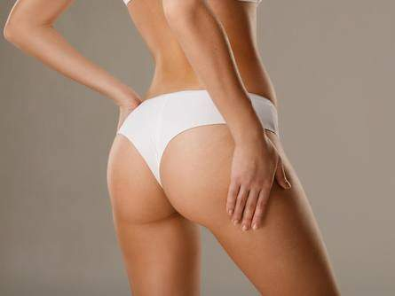

Vücut Estetiği
9 işlem

Liposuction
Liposuction İstanbul, erimeye karşı direnç kazanmış yağ dokularını almak, bireyin çekici vücut hatlarına kavuşabilmesini sağlamak amacıyla yapılan bir…
UzmanlıklarKalça Estetiği
Kalça estetiği İstanbul, kalçaları şekillendirmek, kalçalara yuvarlak ve çekici bir görünüm kazandırmak amacıyla yapılan özel bir operasyondur. Kalçalar…
Uzmanlıklar
Karın Germe
Karın germe İstanbul; ince, sıkı ve çekici bir karın görünümü meydana getirmek için gerçekleştirilen özel bir operasyondur. Bu operasyon sayesinde…
UzmanlıklarBBL
BBL İstanbul BBL İstanbul, özel yağ transfer işlemleriyle yapılan ve kalçaların çekici bir görünüm kazanması için gerçekleştirilen kalça estetiği…
UzmanlıklarGıdı Estetiği
Gıdı estetiği İstanbul, gıdı aldırma gibi isimlerle de bilinen, gıdı bölgesindeki sarkmayı gidermek için yapılan özel bir operasyondur. Gıdı bölgesi; yüz,…
UzmanlıklarGenital Estetik
Genital estetik İstanbul, genital bölgedeki estetik problemlerin giderilmesi, bireyin hem işlevsel hem de estetik açıdan sorunsuz bir genital bölgeye…
UzmanlıklarKol Germe Ameliyatı
Kol germe ameliyatı İstanbul, kolları sıkılaştırmak ve inceltmek amacıyla yapılan gelişmiş bir cerrahi operasyondur. Özellikle de hızlı kilo alıp verme,…
Uzmanlıklar
Vaser Liposuction
Vaser liposuction İstanbul, vücut hatlarını gizleyen yağ dokularının alınması ve vücut hatlarının belirginleştirilmesi amacıyla yapılan özel bir…
Uzmanlıklar
Popo Estetiği
Popo estetiği İstanbul, poponun yuvarlak, sıkı ve belirgin bir görünüm kazanabilmesi, popo üzerinde veya çevresinde yer alan estetik problemlerin…
Uzmanlıklar